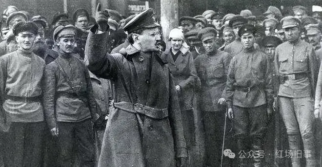
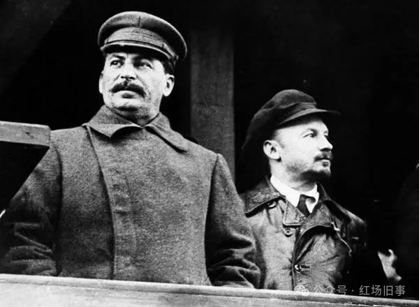
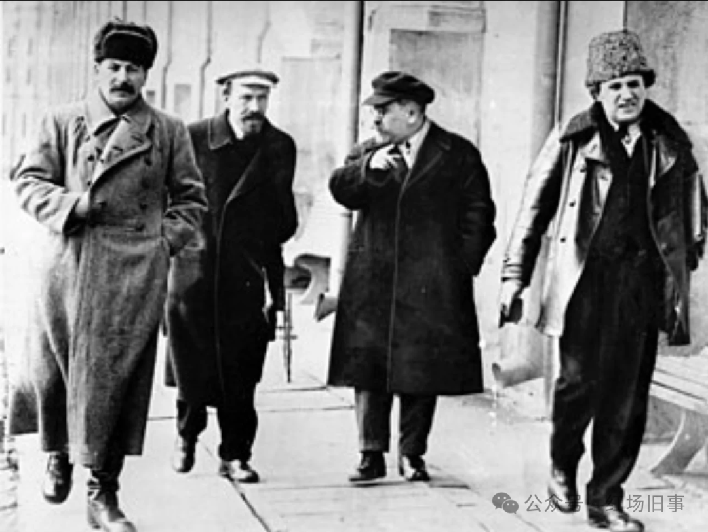

权力游戏：斯大林如何一步步“赢下”苏共高层？
文字与图片版权归各自权利人所有。 查看公众号原文 ↗
1924年1月21日，列宁的逝世像一块巨石，砸向了刚刚站稳脚跟的苏维埃俄国。凛冽的寒风掠过莫斯科红场，数百万民众自发走上街头送别这位革命导师，而苏共高层核心圈子里，一场决定苏联未来数十年走向、没有硝烟的权力暗战，已在葬礼阴影中悄然拉开帷幕。这位导师留下的，不仅是满目疮痍却野心勃勃的国家，更是一个权力真空的烂摊子。彼时苏共高层群星荟萃却暗流涌动：军事天才托洛茨基手握红军兵权，是内战中拯救苏维埃的“民族英雄”；“苏共大脑”布哈林精通理论，深受知识分子和基层党员追捧；革命元老季诺维也夫、加米涅夫是列宁最早战友，根基深厚；而看似低调木讷的斯大林，虽无耀眼才华和显赫功绩，却悄悄手握最关键的组织大权。

列夫·达维多维奇·托洛茨基所有人都清楚权力争夺战已箭在弦上，彼时多数人更看好托洛茨基或布哈林，没人看好沉默的斯大林。但他的胜利绝非偶然，每一步布局都精准踩中权力游戏的核心逻辑——谁掌握组织，谁就掌握国家，这正是他从弱势突围、独揽大权的根本密码。

左：斯大林，右：布哈林列宁刚去世时，斯大林处于绝对劣势。论威望，他不及季、加两位元老；论理论，他远逊于布哈林；论军事影响力，更是被托洛茨基甩开，作为红军总司令，托洛茨基亲手组建军队、击败白军和干涉军，威望达到顶峰，手握最硬核的军事力量。但斯大林握着一张被所有人忽视的致命王牌——苏共中央总书记。这个最初负责日常事务的“闲职”，被他打造成掌控全党的“中枢神经”。不同于其他对手专注博弈、军事或理论，斯大林敏锐意识到，组织权力才是一切权力的根基，人事权决定话语权。

他利用总书记职权不动声色布局：将亲信安插在各级党组织关键岗位，逐步掌控党员任免、升迁、审查权，织就覆盖全党的权力网络。这种“闷声干大事”的隐忍，正是其他对手最缺乏的特质。更关键的是，斯大林深谙“合纵连横”之道，懂得弱势时借力打力。他清楚仅凭自身无法对抗托洛茨基，便主动向同样忌惮托洛茨基的季诺维也夫、加米涅夫靠拢，结成短暂脆弱的“三驾马车”同盟，目标直指阻止托洛茨基掌权。这场同盟本质是“敌人的敌人就是朋友”的利益博弈：季、加两人因曾反对十月革命，担心托洛茨基上台后清算自己；斯大林则需借助两人的元老身份巩固地位、打压对手。这场脆弱同盟，成为斯大林权力崛起的关键一步。权力博弈的第一个战场，是“列宁遗产”的解释权。在当时的苏共，“列宁”是最高精神图腾，谁掌控解释权，谁就占据舆论和道德制高点。托洛茨基率先高举“列宁主义正统”旗帜，宣称自己是列宁遗嘱的忠实执行者、唯一接班人。斯大林则联合季、加展开精准反击：利用宣传资源渲染托洛茨基“反列宁、反党”形象，指责他内战中独断专行，甚至污蔑其妄图建立军事独裁。更狠的是，他隐瞒了列宁遗嘱中“建议撤销斯大林总书记职务”的批评，断章取义将遗嘱解读为反对托洛茨基分裂党的武器，彻底扭转舆论风向。真正决定胜负的是组织权力的较量。托洛茨基虽威望高、手握兵权，却游离在党组织核心之外，不懂拉拢人心、培育势力。他性格孤傲、习惯硬碰硬，动辄与“三驾马车”决裂，最终陷入孤立无援的境地。斯大林则充分发挥组织优势，在全党开展“批判托洛茨基主义”运动，清除其支持者、剥夺其话语权。他深知，在集权体制下，军事力量必须依附于组织权力，否则再强大的军队也无法对抗整个党的机器。托洛茨基的致命缺陷，就是误将军事威望当作权力全部，忘了“党指挥枪”的核心原则。这场清算持续五年：1925年，托洛茨基被解除军事委员会主席职务，失去兵权；1927年，被开除出苏共中央；1929年，被驱逐出苏联，开始漫长流亡；1940年，被斯大林派特工在墨西哥刺杀，这位革命先驱最终死于昔日战友之手。

解决托洛茨基后，斯大林将目标转向曾经的盟友季诺维也夫、加米涅夫。此时“三驾马车”同盟已无意义，季、加两人终于意识到斯大林妄图独揽大权，紧急联合布哈林组成“反斯联盟”，试图阻止其集权。但此时的斯大林已羽翼丰满，掌控着人事、宣传和秘密警察雏形（国家政治保卫局），权力无人能及。面对反扑，他采取“分化瓦解、逐个击破”策略，先批判季、加“反复无常、分裂党”，摧毁其威望，再利用矛盾拉拢布哈林，导致“反斯联盟”彻底分裂。分裂后的同盟不堪一击：1926年，季、加被开除出政治局并流放；1936年大清洗中，两人被逮捕处决；布哈林虽暂时被“宽恕”，却也在1938年被逮捕审判，被迫承认“叛国罪”后处决，这位“苏共大脑”最终沦为斯大林集权的牺牲品。至此，斯大林彻底清除所有对手，独揽苏共最高权力。从被低估的“闲职”总书记，到掌控整个苏联的最高领导人，他用五年时间，凭借隐忍、狠辣和对组织权力的精准把握，赢下了这场残酷的权力游戏。这场博弈不仅决定了斯大林的个人命运，更决定了苏联未来数十年的走向。斯大林的胜利，标志着苏共的权力结构彻底转向集权，为后续斯大林模式形成、大清洗爆发埋下伏笔。那些曾经的革命先驱，无论托洛茨基还是布哈林，最终都成为权力的牺牲品，这背后既有个人性格的悲剧，更有集权体制下权力游戏的残酷逻辑。斯大林赢了，但代价沉重：苏共失去多元发展可能，“个人崇拜”种子生根发芽，恐惧逐渐笼罩全国。这场没有硝烟的权力战争，看似落幕，实则为苏联70年兴衰宿命写下第一个沉重注脚——权力可成就超级大国，亦可摧毁它，而斯大林，用自己的方式开启了苏联的集权时代。